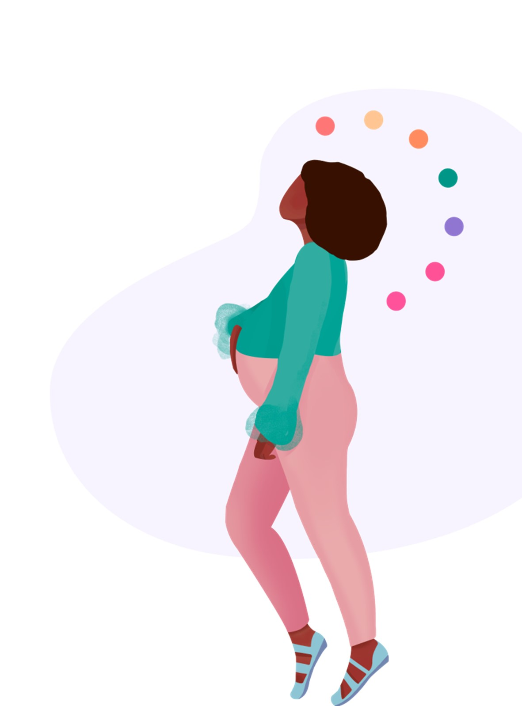
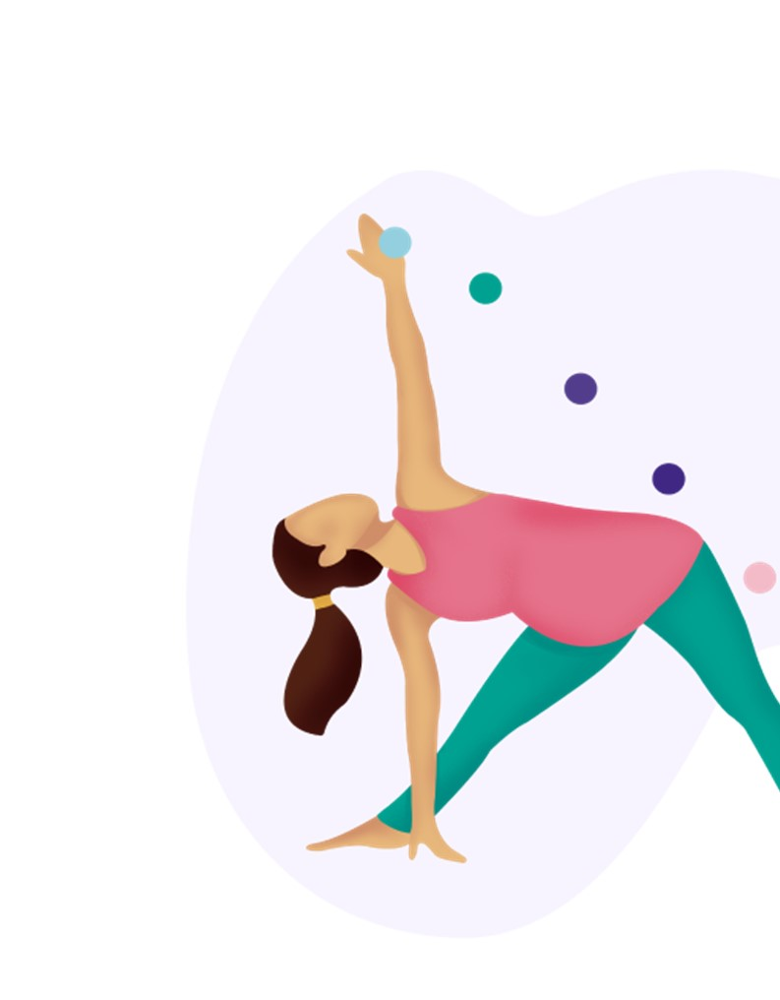

Ginecologia e Obstetrícia CRM/MG: 48.583 RQE: 35.312
Ginecologia e Infanto - Puberal, Endocrinologia e Metabologia. Formada em Medicina pela Universidade Federal de Uberlândia - UFU - Residência em Ginecologia e Obstetrícia pela Universidade Federal de Uberlândia - UFU - Título de Especialista em Ginecologia e Obstetrícia pela FREBRASGO - PÓS Graduação em Endocrinologia e Metabologia pela Faculdade IPEMED de Ciências Médicas - DF - Preceptora da Residência de Ginecologia/Obstetrícia do FUNDASUS - Uberlândia/MG - No ambulatório de Endocrinologia Ginecológica
A Ginecologia é a área da Medicina que auxilia na saúde da mulher. Ela se norteia pela Medicina baseada em evidências para auxiliar na promoção da saúde, na prevenção de doenças e no tratamento das mesmas no organismo feminino. Cabe ressaltar que o verdadeiro ginecologista olha para a mulher como um todo, analisando não somente a questão física, mas também as questões emocionais dessa mulher relacionadas com o processo de envelhecimento. Desenvolve-se uma relação médico paciente de alta confiança. Juntos traçam planos terapêuticos individualizados e personalizados , a fim de garantir um envelhecimento saudável do organismo.
Primeiros sintomas: Os sintomas de gravidez variam, mas normalmente o atraso menstrual é um dos primeiros a aparecer. Outros sintomas comuns são:
Se houver suspeita de gravidez é recomendado fazer um exame de confirmação. Existem 2 tipos de exame: Urinario e Exame de Sangue. Exame urinário é recomendado apos atraso menstrual e, caso negativo, se o atraso persistir recomenda-se repetir o exame apos 1 semana.
A dosagem sérica (no sangue) pode ser qualitativa (positivo ou negativo) ou quantitativa (mede a quantidade de HCG). A avaliação quantitativa é a melhor e mais sensível, pois detecta valores baixos de HCG (maior que 2 mUI/mL, sendo que os valores de referência podem variar dependendo do laboratório).
O ideal é realizá-lo após o atraso menstrual, mas pode ser realizado antes dele, pois normalmente fica positivo de 12 a 15 dias depois da fecundação (dia da relação sexual).
O teste urinário é um bom método, por ser prático e barato, mas normalmente detecta valores de HCG em torno de 50 a 100 mUI/mL, dependendo da marca. Então nas gestações muito iniciais pode ter resultado falso negativo, por isso deve ser realizado somente após o atraso menstrual e repetido após uma semana em caso de resultado negativo. Ressaltamos que não é possível confirmar a idade gestacional com a dosagem de HCG, no sangue ou urina.
Segundo a OMS cesariana é recomendada nas seguintes situações:
Quando bem assistido, com uma gravidez de baixo risco e sem contraindicações, o parto normal, também conhecido como parto vaginal, é o mais indicado. Ele está associado à melhor recuperação da mãe e a muitos benefícios ao bebê, inclusive no desenvolvimento de menos doenças crônicas na vida adulta (como diabetes e asma).
Apesar de indicado quando há condições de saúde, sempre é importante o respeito às decisões e escolhas da mãe, por isso entender bem sobre parto normal e parto cesárea (link para página de parto cesárea) e poder decidir com base em informações confiáveis e baseadas na ciência é o mais importante!
A cesárea pode salvar vidas se bem indicada. Como é um procedimento cirúrgico não é considerada parto humanizado. A humanização se refere à assistência e, sendo assim, o que é possível e deveria ocorrer idealmente é uma assistência respeitosa ao nascimento durante uma cesárea.
Parto humanizado é parto normal? Não. Até porque nem todo parto normal é humanizado. Como já te contamos, a humanização tem a ver com a assistência e não com a via de parto. Por isso, se você quer ter a segurança de poder buscar um parto normal ou o mais natural possível (isto é, sem intervenções caso esteja tudo bem), é importante se certificar do tipo de assistência que receberá da equipe e no local que escolher parir.
 Parto natural: parto que acontece por via vaginal e sem uso de analgesia ou outras intervenções.
Parto humanizado: parto humanizado é uma abordagem mais humana na assistência ao parto. Não tem relação com avia de parto em si, mas com o protagonismo da mulher, as decisões compartilhadas entre a mulher e a equipe multidisciplinar, o olhar para o parto não apenas como um evento fisiológico, mas também emocional, social, cultural e a assistência baseada em evidências científicas.
CONSULTA COM GINECOLOGISTA Realize seu preventivo em Consulta Médica Acessível, com hora marcada e retorno para até 30 dias em consultório particular.
{kind=link}
{kind=link}
{kind=link}
{kind=link}
{kind=link}
{kind=link}
{kind=link}